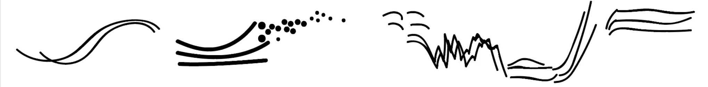
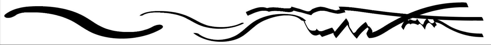

Hello there again!
In this shorter article, I'll cover two more etudes. Unfortunately for the reader, one of them features the author "dancing" (Alice had to leave a bit early, so yours truly stepped in). It's cringeworthy, but maybe not as much as you probably imagine. Again, these videos are for pedagogical purposes only. Anyways, onward.
Breathing phrases v2
The last etude I want to share that features Alice is called "Breathing phrases v2". But first, it's important to explain version 1... The concept here is that the ensemble phrases their material collectively. Using a common breath as a metaphor, the ensemble aims to move through each phrase together, shaping its material into a cohesive line. I do not specify the character nor duration of the line, but the goal is that the gestalt material is perceived as being more or less fused. Thus, performers start and finish phrases at approximately the same time, though the order of cues is not fixed. Below, I've made a simple graphic representation of how this could work. To read this, imagine that time is the imaginary x-axis going from left to right, and the figures along the axis represent the music and movement. Every superimposed figure is made of a collection of self-similar shapes, and these all begin and end at approximately the same time.

"v2" takes the concept of v1, but abandons the aim of synchronization, thus giving it a temporally-fluid texture. Though the cohesion of the material should still be strong, each performer phrases independently.

I personally think that the performers' interpretation of this was quite beautiful. The clip starts with lyrical, sweet, and ominous, with the bandoneon taking the foreground in its highest register, the violin sustaining long tones underneath, and the saxophone playing a warm smooth counterpoint to the bandoneon. The dancer's movements flow gracefully with the music. She turns slowly, and occasionally picks up a brief spirit of energy, gesturing a phrase with her hand or foot, dramatically changing her vertical level and overall reach of her body.
The performance becomes more active around 0:48, led by quicker figures in the saxophone and the violinist coming into the foreground, eventually dropping into its lowest register. Finally, at 1:21, the bandoneon slows down, the violinist returns to his point of origin, and the saxophonist rests oscillating comfortably between two notes.
I think it was challenging for the performers to create a strong clear structure with this etude because they were asked to consciously improvise rhythmic counterpoint while avoiding simultaneous entries. Usually, strong structural moments occur in unison, with a joint agreement that new material has arrived. This issue could be improved by providing the ensemble with a pre-determined large-scale structure (e.g. a simple arch form, or preferably something more complex). It's possible to unite the players within a given structure, even if they're never creating synchronized phrases.
Influence v1
The next etude, which features the author as a substitute dancer, is titled "Influence v1". Similar to "Push/Pull", the instructions are short and deliberately ambiguous: try to influence the actions of the others, but don’t let them influence you.
I know what you’re probably thinking: I look like an weird abstract conductor. Most of the action is in my arms, and I don't move from the waste down. I'm sure this comes from growing up doing martial arts and playing viola in orchestras led by conductors. Because of this, I find an enormous amount of expressivity just using the visible tension in the arms and hands.
The music here begins more aggressively than the last etude; fast repeated notes in the bandoneon and sax, with harsh pizzicatos in the violin. It might seem that we’re all exerting for dominance, battling for attention. However, “influence” shouldn’t be conflated with simply being loud. Rather, it’s manifested here as the uniqueness of one’s playing. Instead of aiming to create a unified texture, as was the case with "Breathing phrases v2", this etude encourages the performers to play in an almost stubborn way, keeping their material distant from that of their colleagues. If you listen to the changes that occur at 0:20, 0:34, and 0:42, the musicians (and myself) tend to stay in their own lane, being conscious of how the texture is evolving around them, and adjusting themselves accordingly to maintain independence.
I think this etude is compelling because it creates a situation where everyone is performing with provocative intent while consistently “moving away” from the intentions of their colleagues, resulting in a captivating complex texture of independent but mindfully-shifting layers of material.
In next and final article of this short series, I’ll present one more etude, and some concluding reflections on how I can proceed from these experiments.